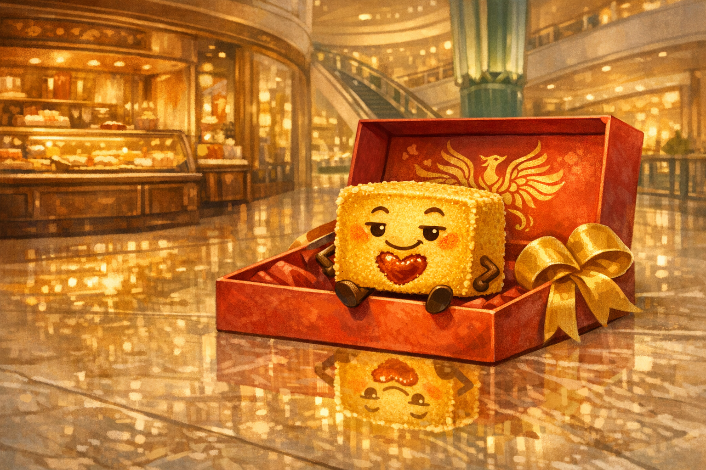
Story 06
Pineapple Cake and the Golden Gift
At Taipei 101, a perfectly wrapped pineapple cake discovers that the loveliest gift is the one brave enough to be shared.
Mandarin Spotlight: 鳳梨酥 (fènglí sū) = pineapple cake
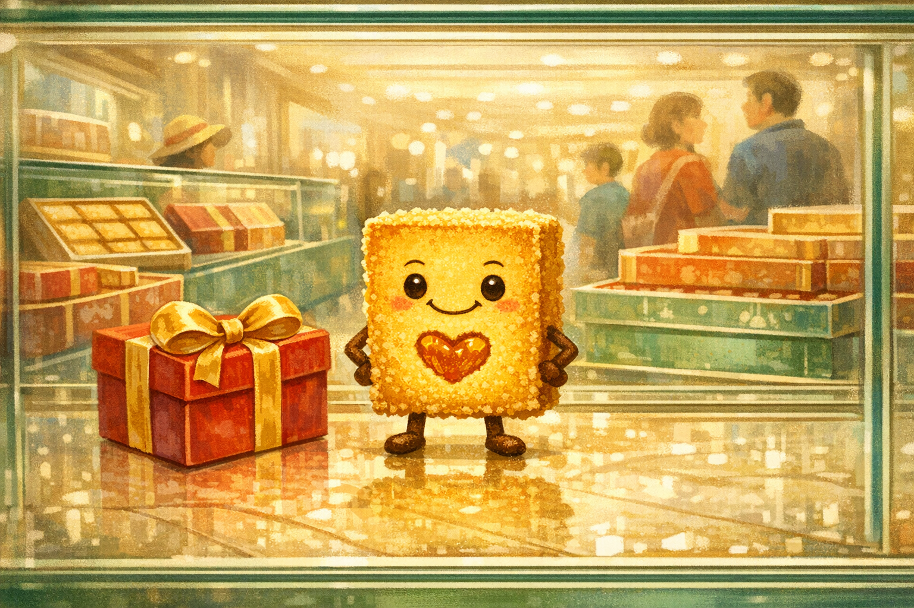
Wrapped Beautifully
Feng had wrapped himself in his finest red box with a gold ribbon and was admiring his reflection in the polished marble floor.
"Exquisite," he announced. "Simply exquisite. I was born to be wrapped beautifully."
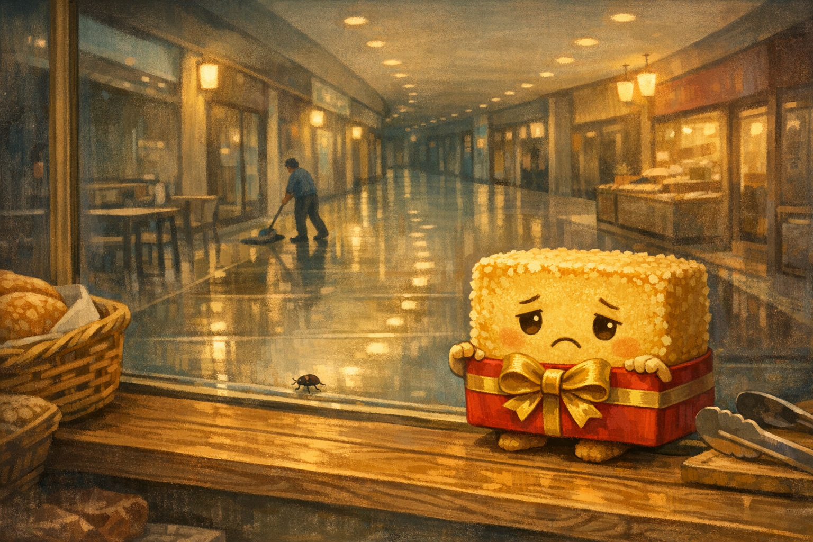
The Display Cake
Feng was a 鳳梨酥 (fènglí sū), pineapple cake: golden, crumbly, buttery, and full of sweet pineapple jam.
There was only one problem. He had been the bakery sample for three weeks. "I am packaging with nothing inside," he whispered. "Except jam. Excellent jam. But still."
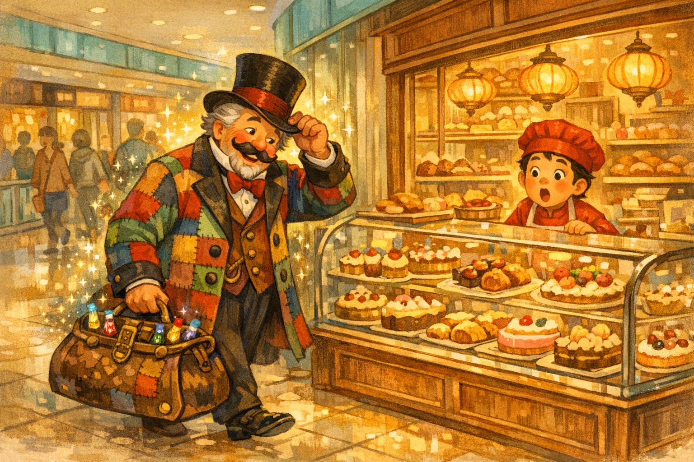
A Mustache Arrives
The next morning, a jolly man in a top hat bounced through Taipei 101 with a curled mustache and a carpet bag that clinked mysteriously.
"來來來!" (lái lái lái), called a vendor. "Come, come, come!" But Uncle Piggle Wiggle stopped only at Feng's window and smiled.
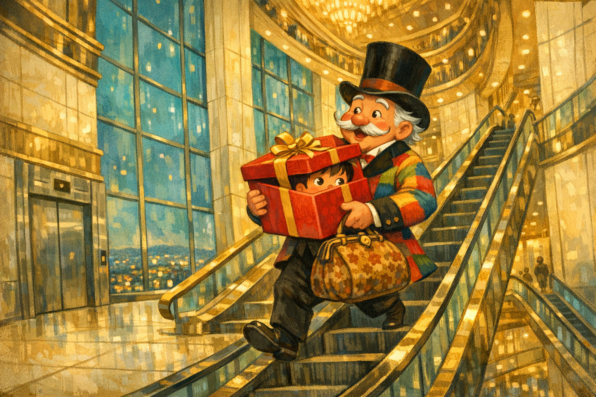
The One He Needed
"I'd like that one," Uncle Piggle Wiggle said, pointing at Feng. The salesgirl blinked. "That's our display sample."
"That's the one I need." Soon Feng was tucked under his arm, leaving the case at last. "Excuse me," Feng said from inside the box. "Am I being diplomatically kidnapped?"
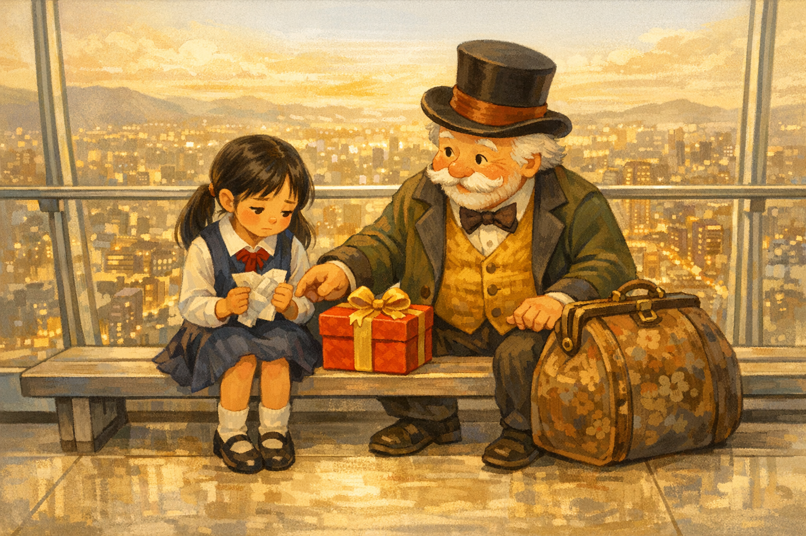
Above the City
Up they went to the observation deck, where Taipei spread below like a blanket stitched with lights.
On a bench sat Mei-Ling, clutching a crumpled paper. Tomorrow was her first day at a new school, and her courage had folded itself smaller than a receipt.
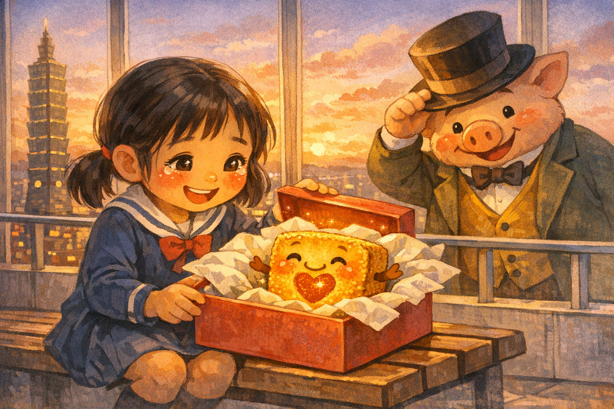
A Gift for Bravery
Uncle Piggle Wiggle placed Feng's box on Mei-Ling's lap. "The best way to make a friend is to give something with no strings attached."
Mei-Ling opened the lid. Feng glowed like a tiny pastry sunrise. "謝謝," (xièxie) she whispered. "Thank you."
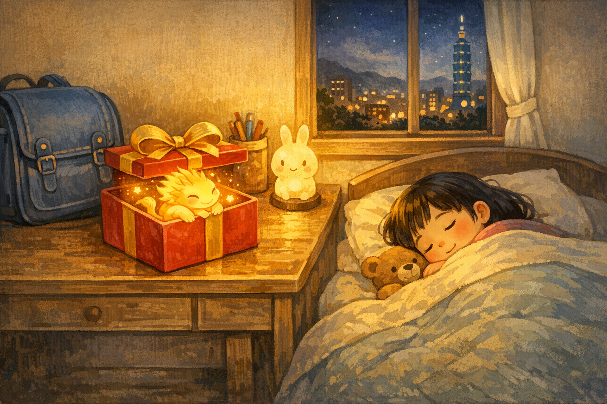
The Night Before
Mei-Ling carried Feng home and set him beside her new school bag. His ribbon shone in the lamplight.
Feng was no longer a display piece. He was a real gift, chosen for a real person. He felt so proud his crumbs nearly applauded.
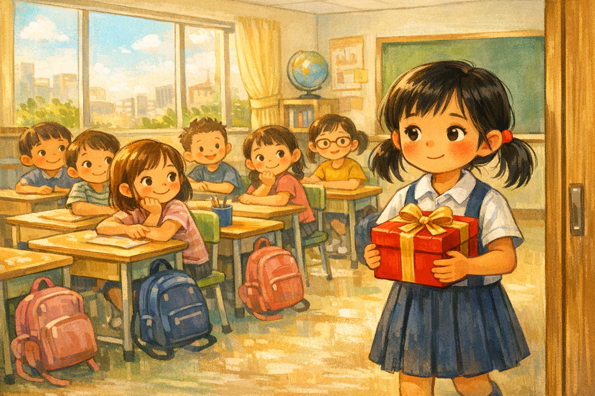
The New Desk
The next morning, Mei-Ling entered her new classroom with Feng's box in her hands and her heart in her throat.
The girl at the next desk looked over. Mei-Ling took a breath. "Would you like a piece of pineapple cake?" Her voice shook, but only a little.
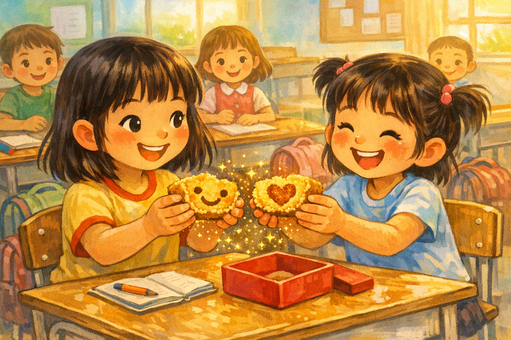
Golden Crumbs
"I love pineapple cake!" said the girl. "I'm Xiao-Yu." Mei-Ling smiled. "I'm Mei-Ling."
She broke Feng in half, carefully and proudly. Golden crumbs scattered like tiny fireworks. They each took a bite and said, "好吃!" (hǎochī), "delicious!" at the exact same time.
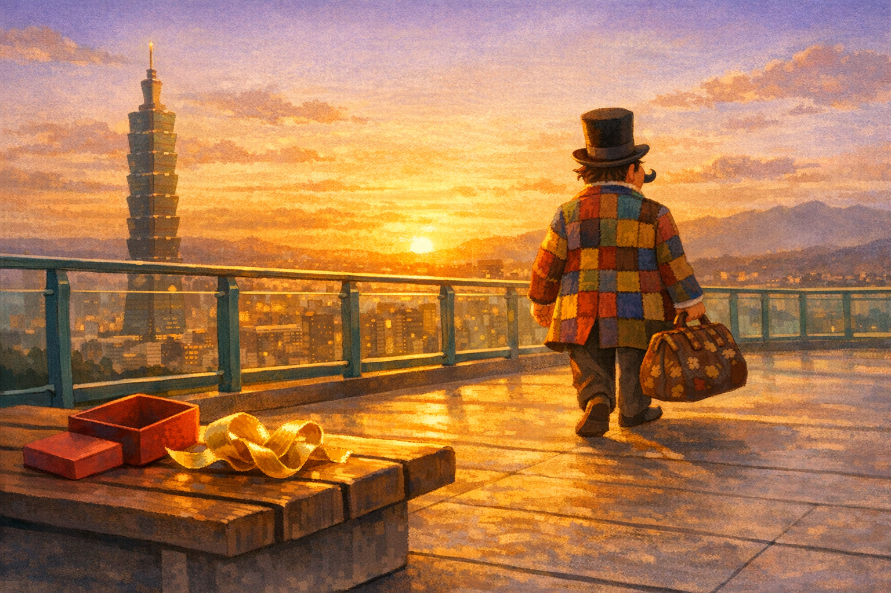
The Golden Gift
And Feng? Feng felt no sadness at all. He felt the deep, buttery joy of being shared.
A gift is not for sitting behind glass. A gift is for giving. The moment you give with your whole crumbly heart, you become beautiful, even without the ribbon.
Goodnight, generous one. May your kindness crumble sweetly into someone's day, and may you rest wrapped in the golden warmth of giving.